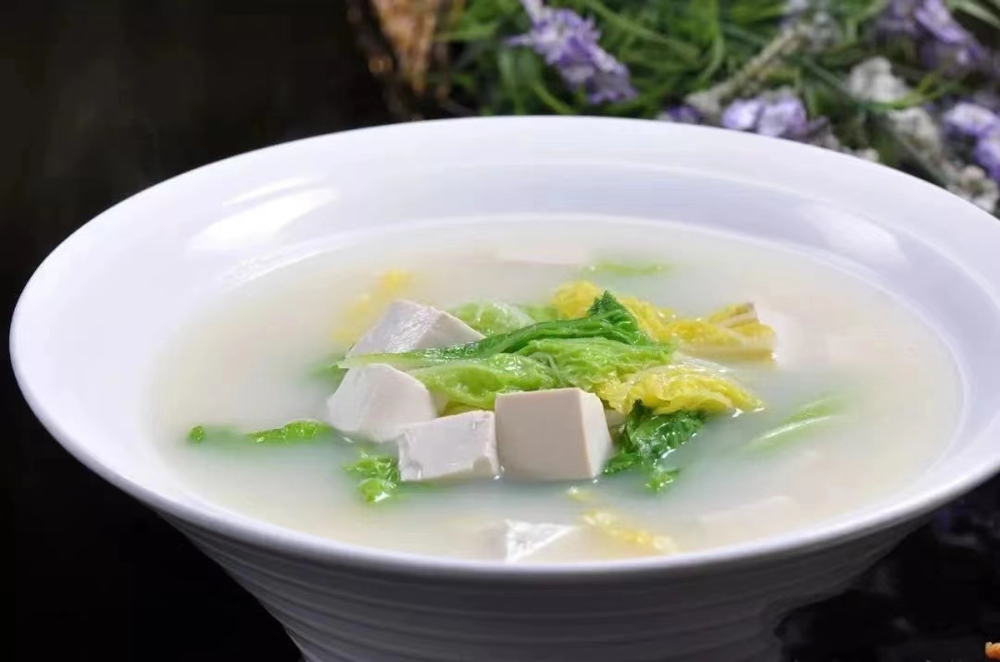
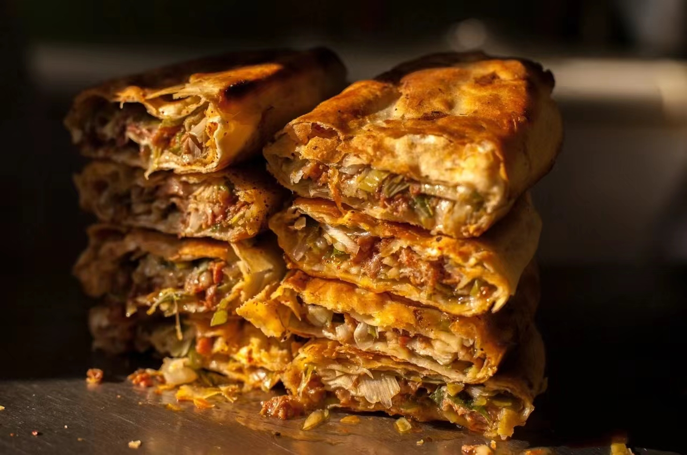
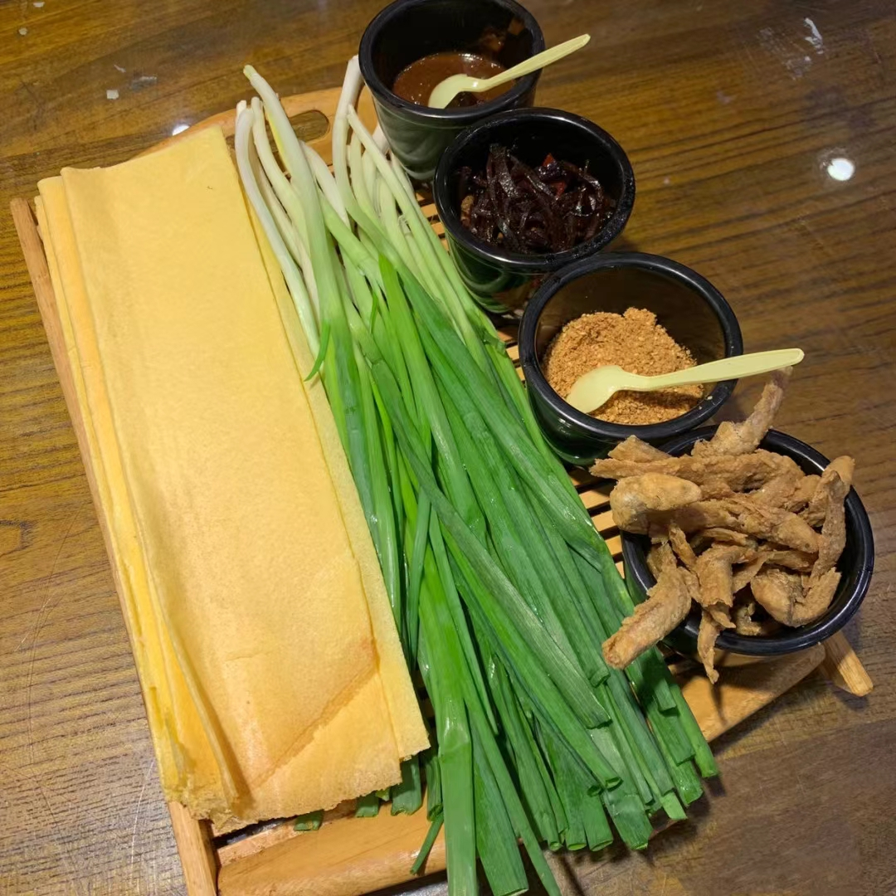
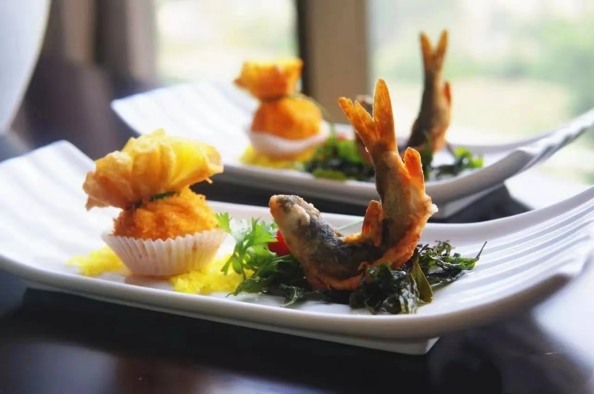

泰安三美
泰安三美豆腐是泰安风味名菜。泰安产的白菜、豆腐和泰山泉水，历来被誉为“泰安三美”。

,
泰山火烧
泰山火烧是泰山名吃的标志性产品，在2011年入选山东省非物质文化遗产保护名录。 泰山驴油火烧制作工艺独特而复杂。

泰山煎饼
泰山煎饼是泰安特色的食品之一，泰安有着1000多年摊制煎饼的历史。制作程序虽不复杂， 但所需材料都有着明确的比例。

泰安三美豆腐是泰安风味名菜。泰安产的白菜、豆腐和泰山泉水，历来被誉为“泰安三美”。
泰山火烧是泰山名吃的标志性产品，在2011年入选山东省非物质文化遗产保护名录。 泰山驴油火烧制作工艺独特而复杂。
泰山煎饼是泰安特色的食品之一，泰安有着1000多年摊制煎饼的历史。制作程序虽不复杂， 但所需材料都有着明确的比例。